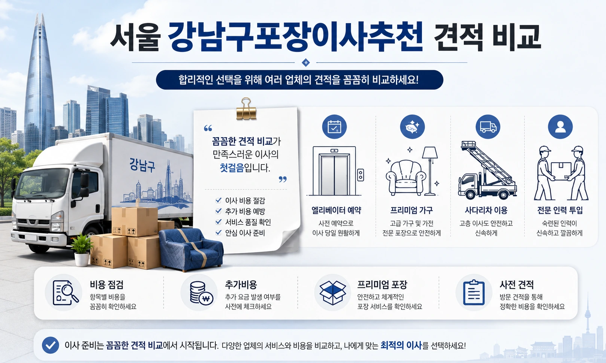
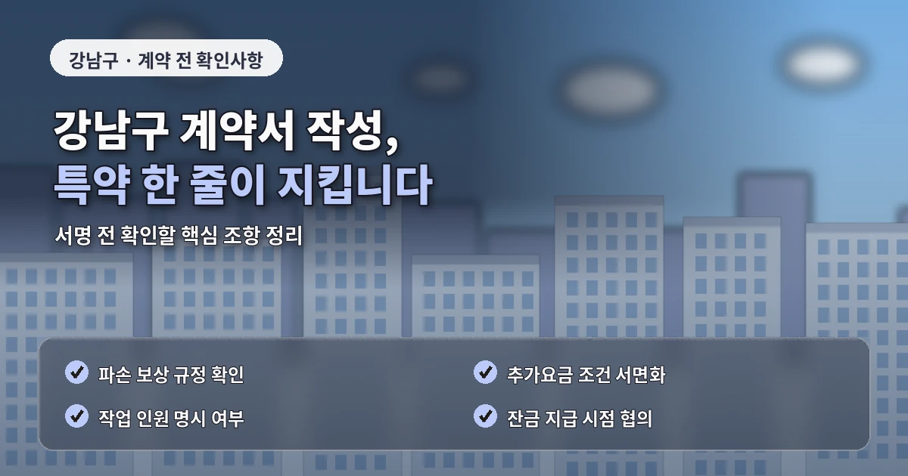

서울 강남구포장이사추천 비용 차이 줄이는 법
강남구에서 포장이사를 준비할 때는
단순히 업체명이나 기본 가격만 보고
결정하기 어렵습니다.
같은 평수의 아파트라도
동선, 주차, 엘리베이터 예약,
사다리차 가능 여부에 따라
실제 견적이 달라질 수 있습니다.
특히 역삼동, 삼성동, 대치동, 논현동,
청담동처럼 주거 형태가 다양한 지역은
현장 조건을 먼저 정리하는 과정이 필요합니다.
비용과 견적이 달라지는 핵심 기준
강남구 포장이사 비용을 비교할 때
가장 먼저 확인할 부분은 짐의 양입니다.
가구와 가전의 개수,
분해가 필요한 붙박이장,
대형 냉장고와 세탁기,
책장이나 장식장처럼 무게가 큰 물건은
작업 인원과 차량 크기에 영향을 줍니다.
단순히 방 개수만 말하면
실제 작업량이 제대로 반영되지 않아
당일 추가비용이 생길 가능성이 있습니다.
방문견적을 받을 때는
현재 집과 이사 갈 집의 조건을
함께 전달하는 것이 좋습니다.

출발지의 엘리베이터 사용 가능 시간,
주차장 높이 제한,
화물차 진입 가능 여부,
도착지의 관리사무소 규정까지
같이 확인해야 견적 오차를 줄일 수 있습니다.
업체 비교 전 확인해야 할 사항
강남구는 고층 아파트와 오피스텔이 많아
엘리베이터 예약이 중요한 편입니다.
관리사무소에서 이사 가능 시간을
정해두는 경우가 있고,
주말이나 월말에는 같은 시간대에
이사가 몰릴 수도 있습니다.
이런 조건을 미리 맞춰두지 않으면
작업 시간이 길어지고
대기비나 추가 인력이 필요할 수 있습니다.
포장이사 업체추천을 볼 때는
저렴한곳이라는 표현만 보지 말고
견적서에 포함된 항목을 확인해야 합니다.
포장재 사용 범위,
가구 보양 방식,
바닥 보호 여부,
대형가전 분리와 연결 가능 여부,
파손 보상 기준이 업체마다 다릅니다.

처음 안내받은 금액이 낮아도
포장 범위가 좁거나
정리 서비스가 빠져 있다면
최종 만족도는 떨어질 수 있습니다.
추가비용을 줄이는 준비 방법
강남구 포장이사 비교견적은
최소 3곳 이상 받아보는 것이 적당합니다.
중요한 것은 업체마다 다른 조건을
같은 기준으로 맞춰 비교하는 것입니다.
한 곳은 사다리차 비용을 포함하고,
다른 곳은 별도 안내한다면
단순 총액만으로는 정확한 비교가 어렵습니다.
계약 전에는 최종 견적서에
차량 대수, 작업 인원,
사다리차 사용 여부,
추가비 발생 조건,
파손 보상 기준이 적혀 있는지 확인해야 합니다.
말로만 안내받은 조건은
나중에 기준이 달라질 수 있으므로
문서나 문자로 남겨두는 편이 안전합니다.
비용을 줄이고 싶다면
이사 날짜도 전략적으로 선택해야 합니다.
계약 전 마지막 체크포인트
손 없는 날, 주말, 월말은
수요가 몰려 비용이 올라갈 수 있습니다.
일정 조정이 가능하다면
평일이나 월중 날짜를 검토하는 것이
견적 부담을 낮추는 데 도움이 됩니다.
강남구 포장이사는
가격만 낮추는 것보다
현장 조건을 정확히 반영하는 것이 핵심입니다.
짐의 양, 건물 규정, 주차,
엘리베이터, 사다리차,
포장 범위를 차분히 비교하면
불필요한 비용을 줄이고
안정적인 이사 준비가 가능합니다.
강남구에서 업체를 고를 때는
견적이 빠르게 나오는지보다
질문에 대한 답변이 구체적인지를 보는 것이 좋습니다.
예를 들어 가구 보양을 어떻게 하는지,
대리석 바닥이나 고급 마감재가 있는 경우
어떤 보호 자재를 사용하는지,
고층 작업 시 동선 관리를 어떻게 하는지
확인하는 과정이 필요합니다.
강남구는 아파트 관리 규정이
세밀하게 정해진 곳이 많기 때문에
이사 전날이나 당일에 확인하면 늦을 수 있습니다.
엘리베이터 사용 신청,
입주민 안내,
화물차 대기 위치,
공용공간 보양 기준은
가능하면 견적 상담 전에 확인해두는 편이 좋습니다.
이 조건을 업체에 전달하면
견적 금액뿐 아니라
작업 가능 시간도 더 정확하게 조율할 수 있습니다.
또 하나 중요한 부분은
가전과 가구의 설치 범위입니다.
포장이사라고 해서
모든 설치가 자동으로 포함되는 것은 아닙니다.
에어컨, 벽걸이 TV,
정수기, 식기세척기,
인터넷 장비처럼 전문 설치가 필요한 품목은
별도 업체가 필요한 경우도 있습니다.
이 부분을 미리 확인하지 않으면
이사 후 생활 정리가 지연될 수 있습니다.
마지막으로 계약 전에는
취소 규정과 일정 변경 조건도 확인해야 합니다.
이사 일정은 부동산 잔금,
입주 가능 시간,
관리사무소 예약과 연결되는 경우가 많습니다.
갑작스러운 일정 변경이 생겼을 때
위약금이나 변경 수수료가 있는지
미리 확인해두면 불필요한 분쟁을 줄일 수 있습니다.
강남구 이사 전 확인하면 좋은 세부 조건
강남구 포장이사는 건물 내부 규정도 함께 봐야 합니다.
일부 단지는 화물 엘리베이터 사용 시간이 제한되어 있고,
공용 복도 보양이나 차량 대기 위치를 엄격하게 관리합니다.
이런 조건은 작업 당일에 확인하면 조율이 어렵기 때문에
견적을 받을 때 미리 알려주는 것이 좋습니다.
또한 청담동이나 논현동처럼 주차 공간이 부족한 곳은
작업 차량이 머무를 위치를 사전에 확인해야 합니다.
차량이 멀리 서게 되면 운반 거리가 길어지고
작업 인원이 추가될 가능성도 있습니다.
결국 정확한 견적은 가격 문의보다
현장 조건을 얼마나 자세히 전달했는지에서 결정됩니다.
자주 묻는 질문
A. 짐이 많거나 고층 아파트라면 방문견적을 받는 것이 정확합니다.
A. 견적 단계에서 층수와 차량 접근성을 함께 알려주고 미리 확인해야 합니다.
A. 가격보다 포장 범위와 보상 기준을 함께 확인하는 것이 안전합니다.